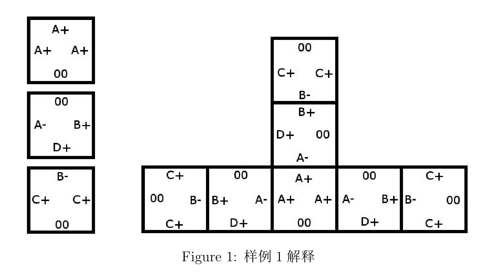

自动化学制造（Automatic Chemical Manufacturing，简称ACM）正在对一个叫自组装（self-assembly）的过程进行实验。在这个过程中，有着天然相互吸引力的分子被混合在溶液中，任由它们聚集组合成更大的结构。但是有一个问题随之出现：有时候，分子们会把自身组合成一个无限大的结构体，以至于把容器撑爆。
你需要写一个程序来判断一个给定的分子集合是否可能组合成一个无限大的结构体。为了使问题简化，你可以作以下两个假设：
1. 问题被限制在二维平面上。
2. 分子集合中的每个分子都被表示成一个正方形。其中正方形的四条边分别代表分子间相连接的四个表面。
你将从数据中得到每种分子的描述。每种分子有四个连接标识来分别表示每条边能与另外分子的哪种边相连。连接标识有两种：
● 一个大写字母(A,…,Z)加上一个 ‘＋’ 号或一个 ‘－’ 号。两条边能并在一起当且仅当两者的字母相等且符号相反。比方说，‘A＋’ 与 ‘A－’ 兼容，但与 ‘A＋’ 或 ‘B－’ 不兼容
● 两个零 ‘00’。这条边将不和任意一条边兼容（包括‘00’）。
假设每种分子都有无限个，并且每个分子都可以旋转和翻转。当分子将自身组成一个结构体时，相互贴合的边必须能够相互兼容，当然，无论边的连接标识是什么，它都可以不与另外边贴合。
图 1 是一个由三种分子组成的一个有限的结构体（它们也有可能组成另外的有限结构体）。
